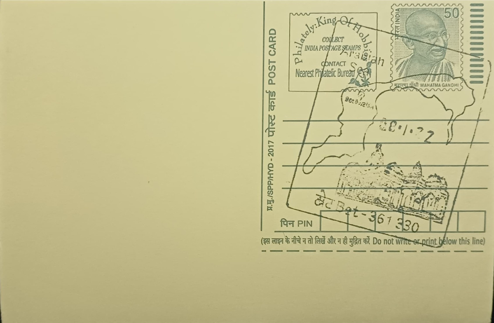

Arabian Sea & Bet Dwarka
અરબી સમુદ્ર અને બેટ દ્વારકા


Bet Dwarka, sometimes rendered Beyt Dwarka, takes its name from the Gujarati word "bet" meaning island, distinguishing it as the island settlement associated with the mainland pilgrimage town of Dwarka. In Hindu tradition the island is identified with references to an "Antardvipa" in the Sabha Parva of the Mahabharata, a place Gujarati scholar Umashankar Joshi argued corresponds to this very site, reached by the Yadavas of Krishna's Dwarka by boat. Local legend holds that this island, rather than the mainland town, was the actual residential quarter of Krishna and his queens, with the mainland Dwarkadhish Temple instead marking the seat of his kingdom's administration. The separation between a ceremonial capital and a residential island has shaped how pilgrims understand the two sites as complementary rather than competing claims to the Krishna legend.
The island occupies a position at the mouth of the Gulf of Kutch, roughly three kilometres off the coast of Okha and about thirty kilometres north of Dwarka town, in what is now Devbhoomi Dwarka district. Its significance operates on two registers simultaneously: as a Vaishnavite pilgrimage site ranked among the holy places devotees combine with a mainland Dwarkadhish darshan, and as an archaeological zone considered one of the most important in the Okhamandal region for its unusually long cultural sequence, running from the protohistoric Late Harappan period through the Maurya era and into modern settlement. This dual identity, sacred geography layered over a genuine multi-period habitation site, is what distinguishes Bet Dwarka from many other coastal pilgrimage spots in Gujarat and has drawn both religious trusts and government archaeological bodies to maintain an interest in the island.
The island's principal shrines, including the Dwarkadhish temple complex on Bet Dwarka and the Shri Keshavraiji temple, along with associated sites such as the Hanuman Dandi temple and a Vaishnav Mahaprabhu Bethak, were constructed in their present form around the close of the eighteenth century, considerably later than the mainland temple's own mediaeval core. Tradition further records that in 1551 CE, when the Portuguese-allied Turkish raider known locally as Mirza Aziz attacked Dwarka, the principal deity idol was temporarily relocated to the island for safekeeping, an episode often cited to explain the island's continuing ritual importance. On the natural history side, the surrounding shallow waters of the Gulf of Kachchh support coral formations and seagrass beds that are part of the Marine National Park ecosystem, making the coastline a nursery for fish stocks that the island's traditional fishing community continues to depend on.
The site's most distinctive feature is the sustained programme of marine archaeology carried out just offshore, beginning with excavations by the Deccan College, Pune in 1979 and expanded through work led by archaeologist S. R. Rao in association with the National Institute of Oceanography, Goa. Divers and researchers have recovered stone anchors, structural remains, and a shipwreck near the island jetty believed to date to the Indo-Roman trading period, roughly 1,800 to 2,000 years old, alongside land-side finds of fish-hook and settlement material attributed to the late Indus Valley civilization and estimated at around 4,000 years of age. These findings have been central to, and also contested within, the broader debate over a submerged "lost city" of Dwarka, with marine archaeologists and historians disagreeing over how much of the underwater material can be tied directly to the Mahabharata narrative versus later historical trade settlements.
Underwater exploration at Bet Dwarka has continued into the present decade, with the Archaeological Survey of India's revived Underwater Archaeology Wing dispatching teams to conduct fresh offshore surveys near Dwarka and Bet Dwarka starting in 2025, building on the earlier NIO-led surveys and aiming to apply updated diving and mapping technology to previously documented remains. On land, the island's temples remain active places of worship administered by local temple trusts in coordination with the broader Dwarkadhish temple administration, reachable from Okha by a short boat crossing that has itself become a fixture of the pilgrimage circuit. Bet Dwarka today functions less as a single monument than as a composite destination, where a boat ride to an active pilgrimage island, a fishing coastline, and an ongoing underwater excavation site all sit within the same few kilometres of Gujarat's Arabian Sea coast.
| Date of Introduction | April 8, 2011 |
|---|---|
| Address | Sub Postmaster, |
| Bet SO, | |
| Devbhoomi Dwarka (dt.), Gujarat - 361330. |